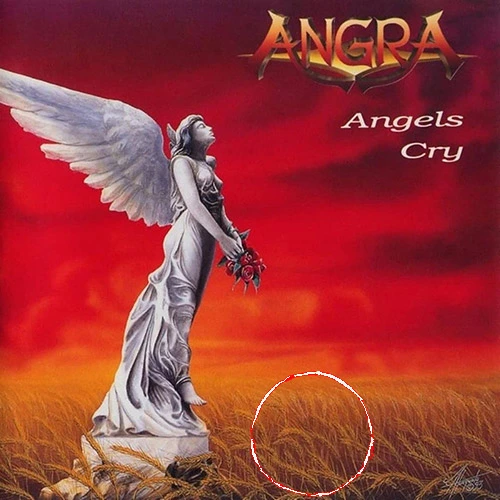
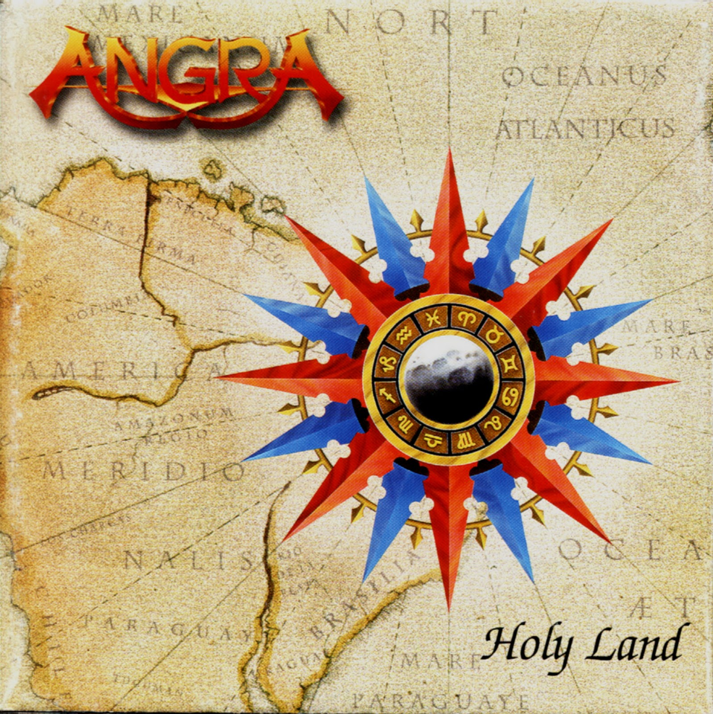
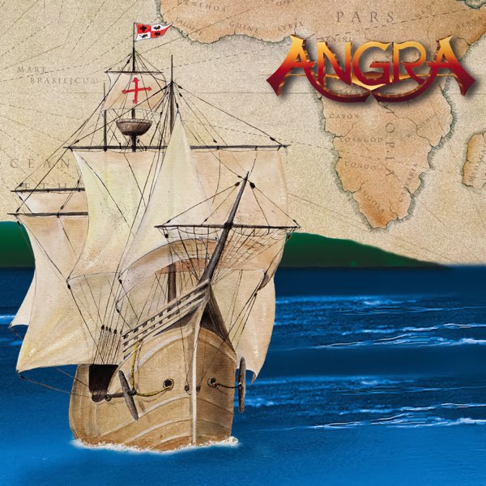
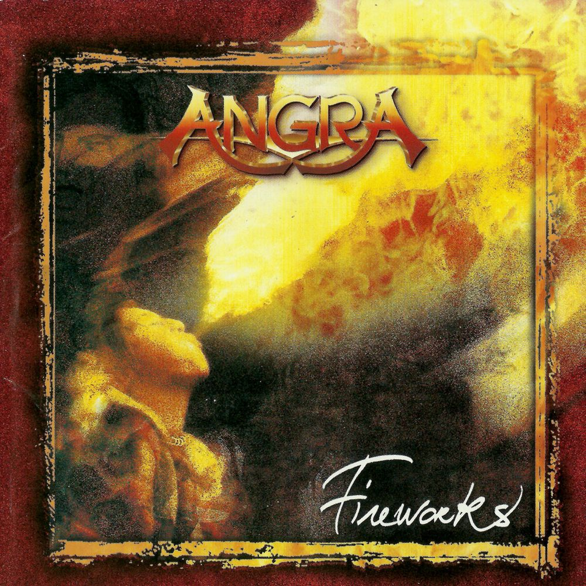
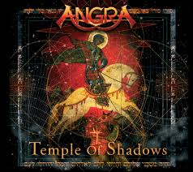
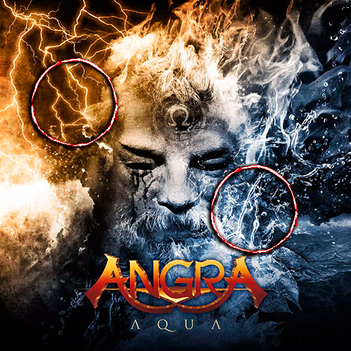
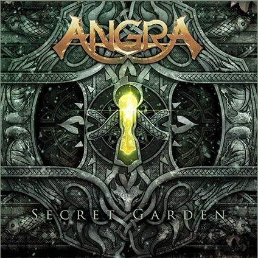
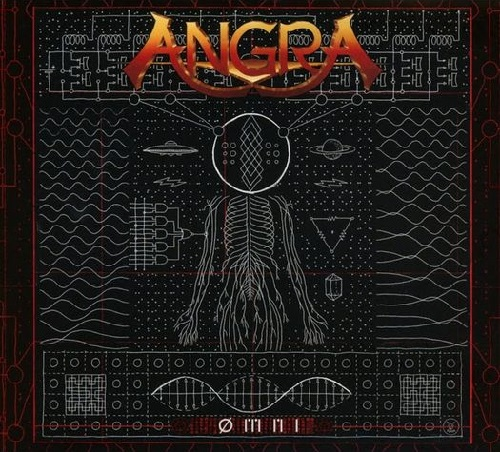
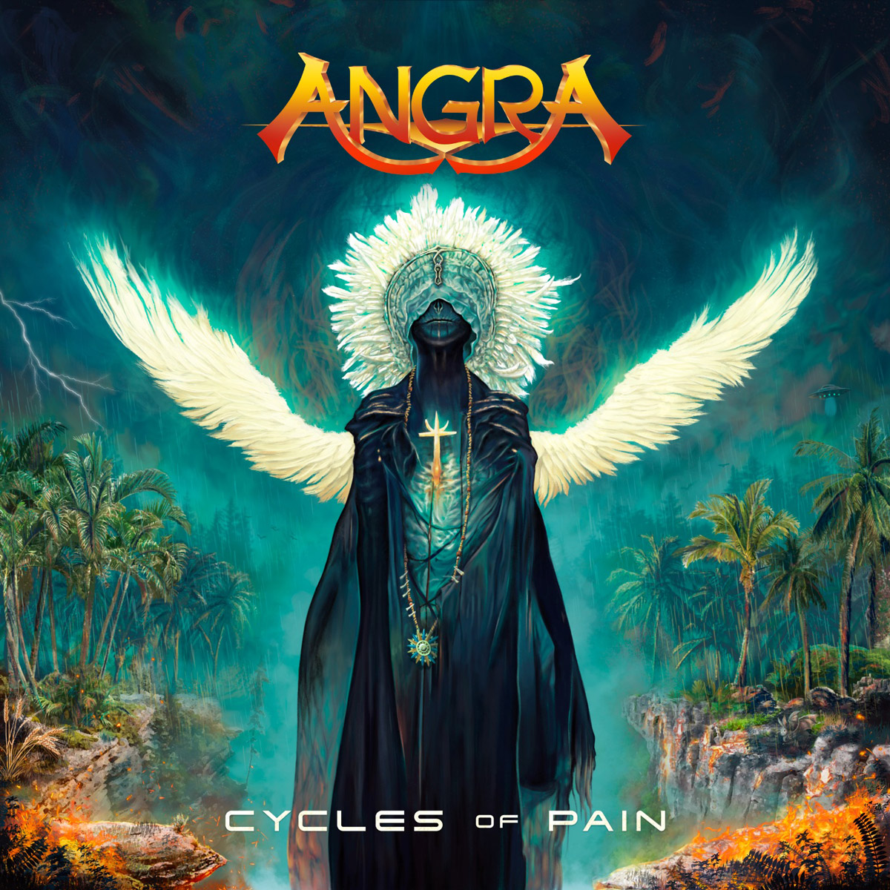

Discografia
- Angels Cry (1993)
- Holy Land (1996)
- Freedom Call (1996)
- Fireworks (1998)
- Rebirth (2001)
- Hunters and prey (2002)
- Temple of Shadows (2004)
- Aurora Consurgens (2006)
- Aqua (2010)
- Secret Garden (2014)
- ØMNI (2018)
- Cycles Of Pain (2018)

Angels Cry é o álbum de estreia da banda, lançado em 1993 no Japão e em 1994 no restante do mundo. Gravado na Alemanha sob produção de Charlie Bauerfeind e Sascha Paeth, o disco enfrentou desafios técnicos devido à inexperiência da banda, o que levou à substituição do baterista Marco Antunes por Alex Holzwarth. Musicalmente, o álbum é um marco do power metal, misturando virtuosismo, influências eruditas (como Paganini, Vivaldi e Schubert) e elementos da música brasileira. O vocal de André Matos se destaca, assim como os solos criativos de Kiko Loureiro e Rafael Bittencourt. Com faixas icônicas como "Carry On", "Time", "Never Understand" e a versão de "Wuthering Heights", o disco alcançou sucesso comercial, especialmente no Japão, e estabeleceu o Angra como referência mundial do metal melódico. Em 2021, recebeu uma edição especial comemorativa, reforçando seu legado no cenário do metal.

Lançado em 23 de março de 1996, Holy Land é o segundo álbum da banda e uma das obras mais ambiciosas do metal brasileiro. Trata-se de um disco conceitual que aborda o “descobrimento” do Brasil no século XVI, explorando a fusão entre culturas indígenas, africanas e europeias. Musicalmente, o álbum une power metal, música erudita, folk, elementos progressivos e ritmos brasileiros, criando uma sonoridade única e rica. Destaques incluem "Nothing to Say", "Carolina IV", "Holy Land", "Make Believe" e "Lullaby for Lucifer", com arranjos sofisticados, vocais expressivos de André Matos e performances técnicas notáveis dos músicos. Gravado entre Alemanha e Brasil, com produção de Charlie Bauerfeind e Sascha Paeth, o disco recebeu aclamação internacional, alcançou disco de ouro no Japão e consolidou o Angra como uma das maiores bandas do metal mundial. Holy Land é até hoje considerado o álbum mais ousado e completo do Angra, sendo um marco do metal nacional por sua proposta artística, excelência técnica e valorização da identidade cultural brasileira.

Freedom Call é um EP lançado pela banda em dezembro de 1996, entre os álbuns Holy Land (1996) e Fireworks (1998). Com cerca de 45 minutos de duração, o EP conta com 8 faixas e serviu como uma ponte entre esses dois discos, mantendo os fãs engajados durante o período de transição da banda. Apesar de não ser um álbum de estúdio completo, Freedom Call apresenta material inédito e releituras, reforçando a sonoridade característica do Angra — um power metal técnico e melódico, com influências de música erudita e ritmos brasileiros, herdadas do sucesso de Holy Land. O título pode causar confusão com a banda alemã Freedom Call, fundada em 1998, mas não há qualquer relação entre os projetos. Em resumo, Freedom Call é um lançamento relevante na discografia do Angra por manter o padrão musical elevado da banda e preparar o terreno para o próximo capítulo de sua trajetória com o álbum Fireworks.

Fireworks é o terceiro álbum de estúdio da banda, lançado em 14 de julho de 1998. Gravado no Abbey Road Studios, em Londres, marcou a despedida da formação original com André Matos, Kiko Loureiro, Rafael Bittencourt, Luís Mariutti e Ricardo Confessori. O disco apresenta uma sonoridade mais pesada e direta, com faixas como “Wings of Reality”, “Speed” e “Metal Icarus”, além de baladas como “Lisbon”. Apesar da mudança, mantém elementos técnicos e melódicos característicos da banda. Com destaque comercial no Japão, onde alcançou o Top 15 e vendeu cerca de 700 mil cópias, Fireworks encerra uma era no Angra e representa uma transição marcante na história do metal brasileiro.

Rebirth é o quarto álbum de estúdio da banda, lançado em 2001. Marca uma nova fase na trajetória do grupo após uma reformulação na formação, com a entrada de Edu Falaschi (vocal), Felipe Andreoli (baixo) e Aquiles Priester (bateria), ao lado dos guitarristas Rafael Bittencourt e Kiko Loureiro. O álbum é conceitual e simboliza o “renascimento” da banda, com uma estrutura curiosa: a sequência das músicas ocorre de trás para frente. Musicalmente, mistura power metal melódico e progressivo, com letras intensas e composições refinadas. Produzido por Dennis Ward, foi gravado na Alemanha e no Brasil entre junho e agosto de 2001. Rebirth foi aclamado pela crítica e teve grande impacto comercial, alcançando posições de destaque em países como França e Japão, além de conquistar disco de ouro no Brasil. Em 2019, foi eleito pela revista Metal Hammer como um dos melhores álbuns de power metal da história. Em 2025, ganhou uma edição especial remasterizada com faixas bônus e itens colecionáveis, reafirmando sua importância no legado do Angra e no cenário do metal mundial.

Hunters and Prey é um EP lançado pelo Angra em 2002, após o sucesso do álbum Rebirth. Com oito faixas e cerca de 38 minutos de duração, o trabalho consolida a nova formação da banda com Edu Falaschi (vocal), Felipe Andreoli (baixo) e Aquiles Priester (bateria), além dos guitarristas Rafael Bittencourt e Kiko Loureiro. O EP traz cinco músicas inéditas, versões acústicas de "Rebirth" e "Heroes of Sand", uma versão em português da faixa-título ("Caça e Caçador") e um cover da música "Mama", do Genesis. As composições misturam heavy metal clássico com elementos da música brasileira, evidenciando a criatividade e coesão da nova fase do Angra. Destaques incluem a intensa "Live and Learn", a balada emocional "Bleeding Heart" e a própria "Hunters and Prey", elogiada pela combinação de peso, melodia e brasilidade. A versão em português ganhou destaque entre os fãs nacionais. O EP foi bem recebido por público e crítica, reafirmando a força do Angra após as mudanças de formação e mantendo a banda em evidência no cenário do metal mundial.

Temple of Shadows é o quinto álbum de estúdio da banda, lançado em 2004. Considerado uma obra-prima do grupo e um marco do power metal mundial, o disco é um álbum conceitual que narra a jornada de um cavaleiro templário, abordando temas como fé, guerra, amor e redenção. Musicalmente, o álbum mistura power metal, metal progressivo, música clássica e elementos da música brasileira. As composições são complexas, com arranjos orquestrais e execução técnica apurada, destacando o talento dos guitarristas Kiko Loureiro e Rafael Bittencourt, além da performance expressiva de Edu Falaschi. O disco também conta com participações especiais, como James LaBrie (Dream Theater) em “The Shadow Hunter”. Reconhecido por sua qualidade musical e profundidade temática, Temple of Shadows consolidou o Angra como uma das maiores bandas de metal do mundo, unindo narrativa épica, sofisticação instrumental e identidade cultural brasileira em um dos álbuns mais importantes do gênero.

Aurora Consurgens é o sexto álbum de estúdio da banda, lançado em 2006. Foi o último disco com o baterista Aquiles Priester e apresenta uma sonoridade mais pesada do que seus antecessores, embora mantenha elementos típicos do Angra, como influências brasileiras e arranjos elaborados. O título faz referência a um tratado medieval atribuído a São Tomás de Aquino e analisado por Carl Jung. Embora não seja um álbum conceitual, suas letras abordam distúrbios mentais como esquizofrenia, bipolaridade e suicídio, com uma abordagem psicológica e introspectiva. A produção foi assinada por Dennis Ward, com gravações realizadas na Alemanha e no Brasil. O álbum teve participação ativa de todos os integrantes na composição, o que resultou em um trabalho diverso e coeso. A edição japonesa inclui a faixa bônus "Out of This World", cantada por Rafael Bittencourt em homenagem ao astronauta brasileiro Marcos Pontes. Em resumo, Aurora Consurgens representa uma fase mais sombria e pesada do Angra, com forte conteúdo lírico e musicalmente técnico, consolidando a versatilidade da banda no cenário do metal mundial.

Aqua é o sétimo álbum de estúdio do Angra, lançado em 2010, marcando uma nova fase da banda. A sonoridade combina o power metal melódico característico do grupo com elementos progressivos e influências da música brasileira. Produzido por Thiago Bianchi, o disco apresenta a formação com Edu Falaschi (vocal), Kiko Loureiro e Rafael Bittencourt (guitarras), Felipe Andreoli (baixo) e Ricardo Confessori (bateria). A produção é moderna e o álbum equilibra técnica, melodia e peso. Destaques incluem faixas como "Arising Thunder", "Newborn Me" e a faixa-título "Aqua", que trazem letras com temas pessoais e sociais, mantendo a tradição da banda em unir virtuosismo instrumental com conteúdo lírico relevante. Em resumo, Aqua reafirma a capacidade do Angra de se reinventar e evoluir, preservando sua identidade musical no cenário do metal mundial.

Secret Garden é o oitavo álbum de estúdio do Angra, lançado em 2014, e é considerado um dos trabalhos mais maduros e sofisticados da banda, comparado ao clássico Temple of Shadows. O disco marcou uma nova fase com a entrada do vocalista Fabio Lione, que trouxe influências europeias e participou ativamente da composição, junto ao baterista Bruno Valverde, também novo na formação. Musicalmente, o álbum equilibra técnica, melodia e energia, com destaque para a faixa "Final Light", que ganhou videoclipe e se tornou um dos singles mais emblemáticos. Em resumo, Secret Garden reafirma o Angra como uma das principais bandas brasileiras de metal, mostrando maturidade, entrosamento e uma produção refinada no melhor momento recente da carreira.

Omni é o nono álbum de estúdio do Angra, lançado em 2021, e marca uma nova fase da banda ao misturar o power metal tradicional com influências modernas, mantendo a técnica e melodia características do grupo. Produzido por Edu Falaschi, ex-vocalista da banda, o disco conta com o retorno do vocalista Fabio Lione, além de Rafael Bittencourt, Kiko Loureiro, Felipe Andreoli e Bruno Valverde na formação. Musicalmente, Omni aborda temas existenciais, sociais e espirituais, com faixas que combinam peso, técnica e melodias cativantes, reafirmando o Angra como referência no metal brasileiro e mundial. Em resumo, Omni representa a continuidade e evolução do Angra, unindo tradição e inovação em um trabalho coeso e impactante na carreira de mais de 30 anos da banda.

Cycles of Pain é o décimo álbum de estúdio do Angra, lançado em 2023, e foi muito bem recebido por público e crítica, sendo apontado como um dos grandes momentos da carreira da banda. A formação conta com Rafael Bittencourt e Marcelo Barbosa nas guitarras, Fabio Lione no vocal, Felipe Andreoli no baixo e Bruno Valverde na bateria. O álbum foi lançado pela gravadora alemã Atomic Fire Records. O single principal, "Ride Into The Storm", traz uma sonoridade agressiva e intensa, refletindo tanto o passado quanto o futuro do Angra. Musicalmente, o disco apresenta metal técnico e poderoso, com arranjos elaborados que reafirmam a importância do grupo no cenário mundial. Em resumo, Cycles of Pain simboliza a força e a renovação do Angra, combinando tradição e inovação, e consolidando a banda com uma sonoridade contemporânea e impactante em seu décimo trabalho oficial.